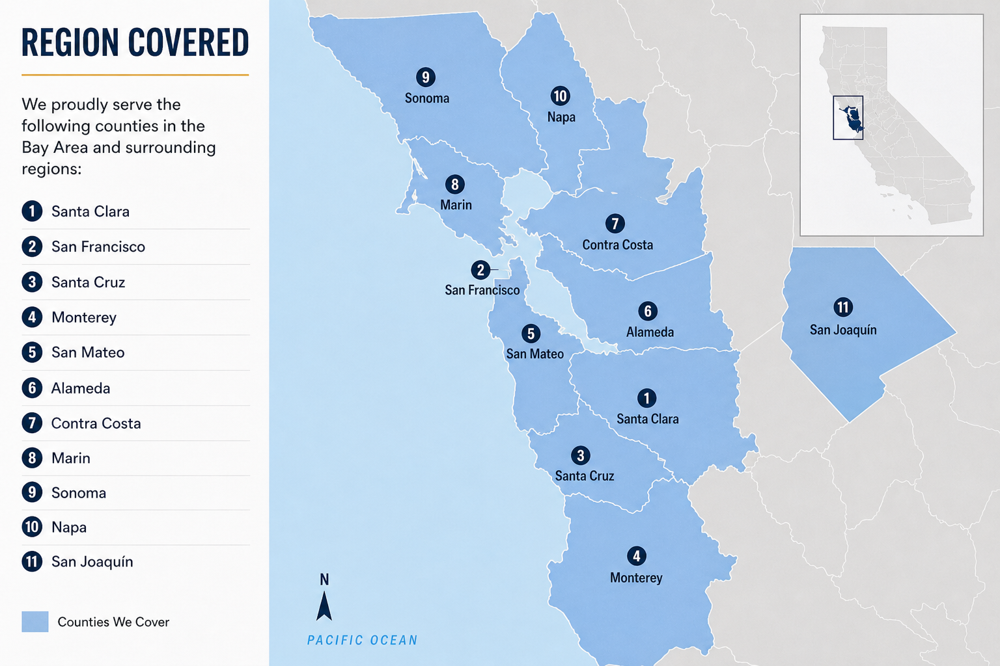

Manufactured Home Appraisals in Northern California
NorCal Valuations provides manufactured home appraisal services throughout the Bay Area and surrounding Northern California counties. We regularly serve clients in Santa Clara, San Francisco, Santa Cruz, Monterey, San Mateo, Alameda, Contra Costa, Marin, Sonoma, Napa, and San Joaquin counties.
If your property is outside the highlighted region, please contact us. Service may still be available depending on the location, appraisal type, and scheduling availability.
Start an Appraisal Request